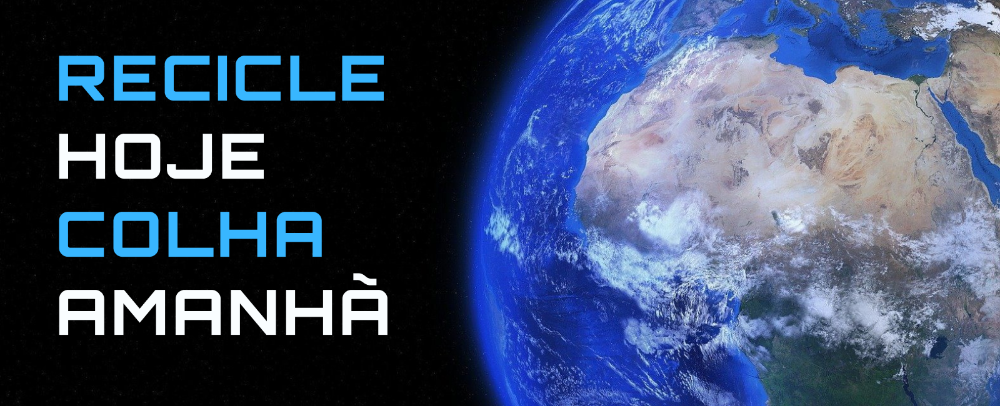

SOMOS A PORTINRON
Fundada em 2023, a Portinron é uma empresa especializada em coleta de materiais recicláveis, com o foco na captação de papel e papelão.
Não importa o tamanho da sua empresa ou condomínio, nós temos soluções completas que permitem a coleta e transporte do seu material reciclável.
Nossa Historia